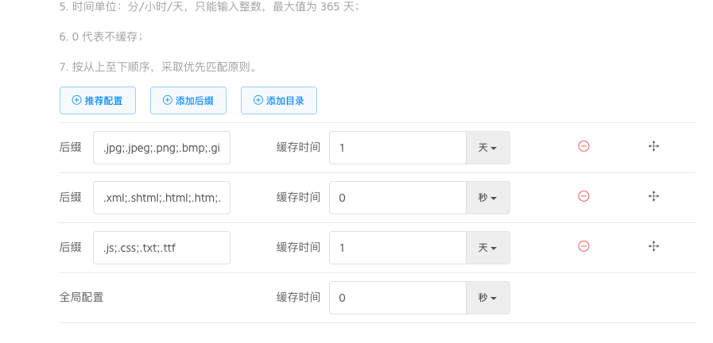

我觉得我是不折腾就会死的人，现在的博客部署在 Github Pages 上，访问速度一直令我非常不爽，所以准备迁移到七牛。
七牛新建 bucket 后，在空间设置，把默认首页设置改成启动就完成了。
还有一个就是一定要绑定自己的独立域名，否则站内数据改变后，用七牛提供的临时域名来访问的话，缓存一时半会是不会刷新的，独立域名可以设置缓存刷新时间，前提是那个域名需要在国内进行备案。
缓存可以根据不同类型的数据有不同的策略，但我为了省事，直接将所有配置改为了 0，也就是不进行缓存，因为不是什么大流量站点，再加上七牛的 CDN 优化，所以即便不缓存速度也非常快，这样可以保证我每次在发布或者修改内容后能够及时更新。其实完全可以把非 HTML 类型的数据设置一些缓存时间。
可以点这里试一试部署在七牛上的速度，只是我之前的一个备案过的域名，但我没打算用这个域名来做我的国内博客地址，新地址正在备案中： jpanj.com 贾攀家。
接下来就是把博客生成出来的静态站按照目录结构完整上传到七牛就行了，但是这个工作非常麻烦，每次上传时如果有二级目录的话，需要自己填写前缀，而且每次生成后都需要自己登录到七牛上传一下。身为程序员的我，这不是在侮辱我的智商吗？所以我写了一个 Python 脚本，可以帮我自动完成这个工作。
我之前是使用的 hexo 的 github 插件来进行发布的，其实也非常简单，只需要执行: hexo d -g 即可完成生成静态站和部署的工作。（g=Generate static files. d=Deploy your website.），现在只需要在执行玩这个操作后，再执行下发布到七牛的脚本，就可以完成双发布了。
我是配合 Alfred 来用的，如果没装 Alfred Workflow 的话，直接执行脚本也是可以的，把脚本简单修改下就行了。
上效果图：
代码已上传到 Github：https://github.com/Panmax/qiniu-blog-deploy
updateAt: 2017-06-20
我把缓存策略改为了如下所示

图片和样式文件进行缓存，html 等文本文件不缓存。因为七牛会自动寻找 index.html，所以在真正访问时，不带 /index.html 后缀的页面也可以打开，所以我把全局配置设为了不缓存，也就是说不在这个配置中的文件也不进行缓存。